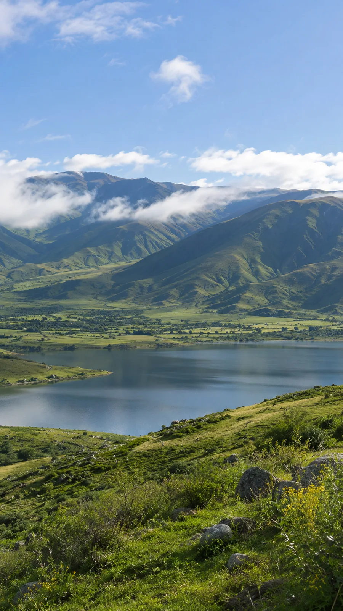

Excursiones y visitas guiadas
Recorridos por los puntos turísticos de Tucumán y el Norte, acompañados por un guía de turismo.
Consultar recorridosDesde Tucumán, hacia nuevos caminos
Paisajes que sorprenden. Viajes que se comparten. Turismo receptivo y emisivo con un guía de Tucumán.
Tucumán · Norte argentino · El mundo

Chava Turismo
Chava Turismo es un emprendimiento tucumano a cargo de un guía de turismo. Organizamos excursiones, eventos y viajes grupales para descubrir el Norte y seguir viajando.
Recibimos a quienes llegan a Tucumán y acompañamos las consultas de quienes quieren salir a recorrer Argentina y el mundo.
Escribinos por WhatsApp con el destino que te interesa, la fecha aproximada y cuántas personas viajan. Te contamos las opciones y la disponibilidad.
Sí. Coordinamos grupos hacia otras provincias y al exterior, y ofrecemos paquetes turísticos para destinos de Argentina y el mundo.
Sí. Realizamos traslados de ingreso y salida de Tucumán. Consultanos con la fecha, el punto de encuentro y la cantidad de pasajeros.
Receptivo & emisivo
Recorridos por los puntos turísticos de Tucumán y el Norte, acompañados por un guía de turismo.
Consultar recorridosOrganización de eventos y coordinación de grupos hacia otras provincias y al exterior.
Consultar por un grupoTraslados de ingreso y salida de la provincia. Contanos cuándo llegás o cuándo partís.
Consultar un trasladoPaquetes turísticos para viajar por el país o al exterior. Las opciones se consultan según tu destino.
Consultar destinosUna mirada al Norte
Paisajes ilustrativos para inspirar tu próxima salida.
Elegí una foto para verla de cerca.
El próximo camino empieza acá
Contanos el destino, la fecha y cuántos viajan.
Conversemos sobre tu próxima salida.
Comentarios de viajeros
Cada viaje deja una historia.
Este espacio espera las experiencias de quienes viajaron con Chava Turismo.
Todavía no hay comentarios publicados en esta demo.